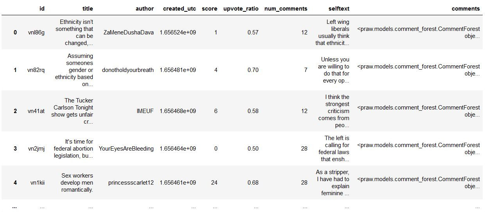
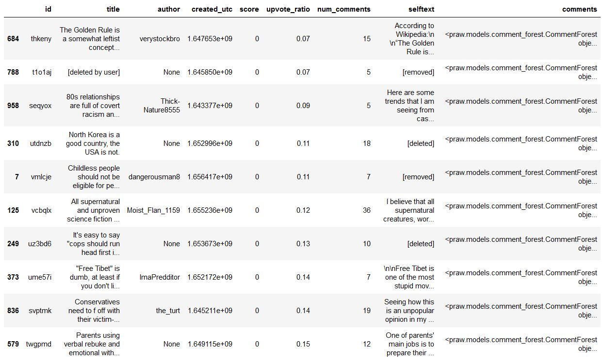
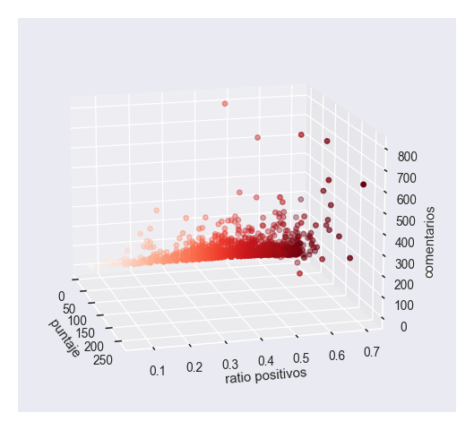
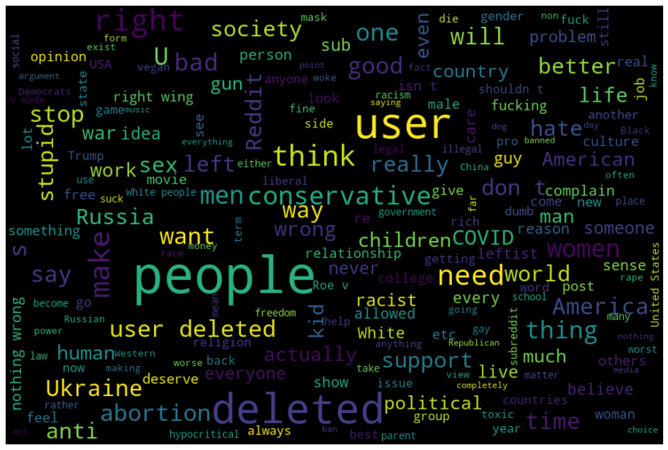
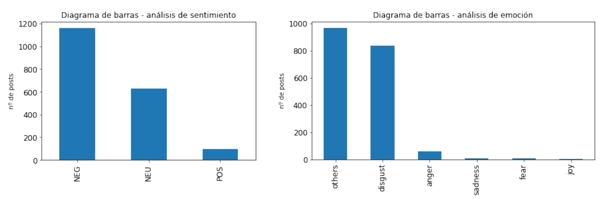

{kind=link}

Aenean ornare velit lacus, ac varius enim lorem ullamcorper dolore aliquam.
Dedos que se señalan, metáfora del desacuerdo.
En busca de una cantidad suficiente de contenido más o menos "impopular", hemos seleccionado un foro concreto de Reddit (i.e. un subreddit) con la intención de que tuviese una masa crítica de usuarios activos suficiente, y con potencial para que ahí se viertan opiniones controvertidas. No todos los subreddits valen: algunos tienen poca actividad, en otros solo se comparten enlaces o fotos, otros (la mayoría) felizmente dan pie casi sobre todo a conversación civilizada sobre hobbies y experiencias gratas...
Bien, después de barrer la "Redditsfera" en busca de subreddits adecuados para buscar posts "controvertidos" en cantidad, se ha seleccionado finalmente el subreddit r/trueunpopularopinion. Otros subreddits que, en base a sus estadísticas, contenido o tono se llegaron a considerar eran opciones tales como r/changemyview, r/centrist, r/conservatives, r/abortion, r/vegan, r/childfree, sin duda cada cual con sus características diferenciales.
Como otras tantas redes sociales, Reddit tiene su botón de "like" y "dislike" (que por cierto parece algunas comunidades customizan con sus propios símbolos). Éstos son una buena medida de si un contenido que se ha "posteado" es controvertido o no... para la audiencia que lo lee. Hemos asumido en este trabajo que una ratio de likes inferior a 0.7 empezaría a encajar con "posts" que generan desacuerdo, enfado u otras sensaciones que llevan a votar negativamente. También, hemos considerado que un "post" que no genera apenas comentarios es a efectos prácticos irrelevante.
En base a esto, recogimos "posts" que tengan una ratio de "likes" inferior a 0.7 y que tengan al menos cinco comentarios. El margen de tiempo abarcado (nos hemos tenido que plegar a las circunstancias) ha sido entre UNIX timestamp 1631377026 y 1656527400 (esto es, entre el 11 de septiembre de 2021 a las 18:17 y el miércoles 29 de junio de 2022 a las 20:30, hora continental española). Entre un tercio y un cuarto de los posts creados entre dichas fechas cumplían las condiciones que nos habíamos marcado.
¿Cómo lo hemos hecho? Bien, hay una API oficial de Reddit, llamada praw, o mejor dicho este es el nombre de la librería de python que se usa para interactuar con ella. Hay un "pero"... no permite buscar más allá de 1000 posts, y no permite buscar por rangos de tiempo. Esto nos lleva a otra API, extraoficial, llamada pushshift, que permite acceder a volcados periódicos de datos desde reddit. Pero esta otra API extraoficial no da acceso (o no he sabido encontrarlo) a todos los datos de interés. De manera que hemos tenido que desarrollar un "baile" entre estas dos APIs. Hemos hecho búsquedas por tiempo en "pushshift", obtenido los identificadores correspondientes, y luego mediante éstos buscado los datos que faltaban a través de praw (oficial).
Más detalles, y más técnicos, en los notebooks de python empleados para la recogida de datos (disponibles en el repositorio).
Podemos hablar de varios aspectos que hemos analizado o percibido, de forma cuantitativa o cualitativa. Lo primero que podemos decir viene a raíz de la cantidad de “posts” obtenidos que cumplían las condiciones de “controversialidad” que nos habíamos marcado. De cada remesa de 1000 posts que filtrábamos (hubo ocho de estas remesas, aunque con solapamiento), grosso modo entre 200 y 350 posts cumplían las condiciones. Ello representaría un porcentaje cercano al 25-30%, ciertamente apreciable, pero lejos de ser mayoritario. En una captura de un dataframe de pandas podemos ver la estructura de datos obtenida mediante nuestro procedimiento:
Una mirada a los títulos de estos (y otros) posts nos permite ver ya algunos temas que, en función de qué foco tengan, o cómo sean tratados pueden levantar ampollas en uno u otro sentido.
Podemos ordenar el dataframe en función de la ratio de likes, y así lo hemos hecho. Hemos podido ver ahí, en el lado negativo del espectro, como el tono tendía a ser más agresivo y los mensajes a ser más simplistas y taxativos.
Un vistazo al extremo opuesto nos llevaba a otro terreno, en el que las opiniones vertidas tal vez no hacían felices a todo el mundo (de ahí una ratio de positivos de 0.7) pero se trataba de afirmaciones más matizadas. ¿Quién votó en contra?, cabe preguntarse. En todo caso, he de admitir que me resultó grato visualizar esa "zona de grises", en contraposición al "pozo del infierno" constituido por los posts más vitriólicos y peor valorados. Resultó llamativo el ver posts de personas que afirmaban alinearse con determinadas ideas, pero que criticaban (educadamente) algunos posicionamientos que podían asociarse a éstas.
Lo que hemos visto de las tablas anteriores, lo podemos complementar con lo que se desprende de representar en tres dimensiones las tres variables numéricas que nos ofrecen nuestros datos: la valoración global (balance de votos), la ratio de votos positivos, y el número de comentarios recibidos ("engagement"). Véase debajo una imagen de la representación, y también aquí en versión parcialmente animada --> en este .gif <--
. De la visualización se desprende esencialmente que, de los casi 1900 posts controvertidos que hemos obtenido, una enorme cantidad tiene un "score" nulo (más votos negativos que positivos). Se constata también que como peor es la ratio de votos positivos, peor tiende a ser el número de comentarios recibidos. Solo un puñado de posts despuntan y superan la barrera de los 200 comentarios, y éstos además se dan casi todos en comentarios con buena valoración.
¿Cómo visualizar rápidamente qué caracteriza la temática de muchos de estos posts? Mediante una nube de palabras podemos realizar una aproximación a esto. Hela aquí debajo:
Como era de esperar en la nube de palabras hallamos temáticas relacionadas con posicionamientos políticos, cuestiones relacionadas con identidades grupales, parece que posiblemente quejas sobre reddit (llamativo el "user deleted"), y también el conflicto bélico en Ucrania. La palabra más resaltada, "people", sugeriría que podemos encontrar en nuestra selección de posts a personas opinando sobre "la gente" o "alguna gente"... Es sencillo imaginar que si lo que se vierte es una opinión poco positiva, eso puede ser respondido de forma análoga.
En relación al tipo de contenido se ha efectuado un análisis de sentimiento de todos los títulos de los posts recopilados, incluyendo también un análisis de emoción, con un foco algo diferente al primero. Véanse debajo, codo con codo:
Lo que nos muestra este análisis es que, como era de sospechar, el tono de la mayoría de los posts que hemos seleccionado en efecto parecería ser negativo, casi 1200 de los 1881 totales (cerca de un 60 %). Una porción relevante ha sido clasificada como con tono neutro, y muy minoritariamente hallamos posts con títulos valorados como positivos. Por lo que respecta a la valoración de la emoción expresada, una mayoría realmente no se ha podido determinar, pero cerca de la mitad de los posts parecían expresar desagrado (o mucho más minoritariamente, enfado).
De lo que hemos visto tal vez podemos confirmar algunas preconcepciones, quizá añadir algún matiz nuevo. Por un lado, parece que los comentarios que, de una u otra forma, expresan negatividad tendrían tendencia a no ser bien recibidos. Ya sea porque vierte una opinión negativa o la expresa de forma demasiado agresiva, parece que eso “tira para atrás”. Ya sea por el algoritmo de Reddit o por sabiduría social, parece que los comentarios con las más nefastas valoraciones son también aquellos que menos conversación generan.
¿Dichos comentarios tan tóxicos simplemente son menos visibles y rápidamente caen en el olvido? O bien, ¿la gente prefiere evitar la interacción cuando ésta promete ser negativa con encono? Conforme nos alejamos de las peores valoraciones, tiende a aumentar la conversación, como mostraba la representación tridimensional que generamos, claramente haciéndose más vivaz a partir de cierto umbral, que no parece estar alejado de esa ratio de 0.7 positivos que hemos marcado como frontera en este trabajo. Tal vez hubiese sido interesante no hacer ese corte y ver qué pasaba con el conjunto de los posts, incluidos los realmente bien valorados.
Cabe preguntarse si esto es indicativo de que la toxicidad que pueda estar asociada a las redes, si bien existente y visible, ¿podría no dejar de ser un fenómeno de márgenes? Eso sí, mucho más accesible que en la era pre-internet.
Se ha quedado en el tintero una cuestión que estaba en mente cuando se comenzó este trabajo: generar un mapa de interacciones, en base a un grafo que mapease los emisores de contenido y sus interacciones con otros usuarios. La idea era que cada autor/a de un post sería un nodo emisor de contenido. Ese nodo conectaría con más autores/as, en este caso en base a comentarios al post original. Se haría ese proceso para cada post, calculando el número de interacciones (respuestas y respuestas cruzadas) entre dos autores. En base a ello se podría haber calculado una serie de vértices (conexiones) entre éstos, que tendrían mayor o menos “peso” en función de la cantidad de total de interacciones que haya habido. Esto podría complicarse un poco más, añadiendo una capa, por ejemplo de análisis de sentimiento, para valorar la positividad o negatividad de esos intercambios. Queda, por ahora, como una idea a desarrollar.
Aenean ornare velit lacus, ac varius enim lorem ullamcorper dolore aliquam.
Si entre tus inquietudes se hallan la polarización, la desinformación, la ciencia y la privacidad en redes, tenemos algo en común. Escríbeme si quieres.